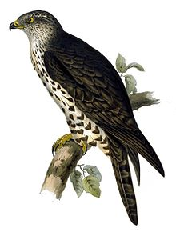
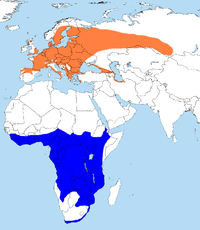
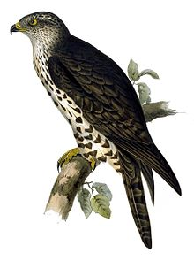
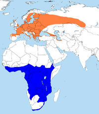

| Honey Buzzard | |
|---|---|
|  | |
| Conservation status | |
| Binomial name | |
| Pernis apivorus (Linnaeus, 1758) |
|
|  | |
| Orange: Summer range Blue: Breeding/winter range of Honey Buzzard. |
| Honey Buzzard | |
|---|---|
|  | |
| Conservation status | |
| Binomial name | |
| Pernis apivorus (Linnaeus, 1758) |
|
|  | |
| Orange: Summer range Blue: Breeding/winter range of Honey Buzzard. |
The Honey Buzzard (Pernis apivorus), is a bird of prey in the family Accipitridae which also includes many other diurnal raptors such as kites, eagles and harriers.
Despite its name, this species is not related to the true buzzards in the genus Buteo, and is closer to the kites.
It is a summer migrant to most of Europe and western Asia, wintering in tropical Africa. It is a specialist feeder, living mainly on the larvae and nests of wasps and hornets, although it will take small mammals, reptiles and birds. It is the only known predator of the Asian giant hornet. It is thought that Honey Buzzards have a chemical deterrent in their feathers that protects them from wasp attack. The specific name apivorus means "bee-eater", although bees are much less important than wasps in its diet.
The Honey Buzzard breeds in woodland, and is inconspicuous except in the spring, when the mating display includes wing-clapping. Breeding males are fiercely territorial.
The 52–60 centimetres (20–24 in) long Honey Buzzard is larger and longer winged, with a 135–150 centimetres (53–59 in) wingspan, than the Common Buzzard Buteo buteo. It appears longer necked with a small head, and soars on flat wings. It has a longer tail, which has fewer bars than the Buteo buzzard, usually with two narrow dark bars and a broad dark sub-terminal bar.
The sexes can be distinguished on plumage, which is unusual for a large bird of prey. The male has a blue-grey head, while the female's head is brown. The female is slightly larger and darker than the male.
Being a long distance migrant, the Honey Buzzard relies on magnetic orientation to find its way south, as well as a visual memory of remarkable geographical features along the way (Mountain ranges, rivers, etc.). This species follows precise migratory routes that avoid large expanses of water over which it cannot soar. Accordingly, great numbers of Honey Buzzards can be seen crossing the Mediterranean sea over its narrowest stretches, such as the Gibraltar Strait, the Bosphorus, or in Israel. The call is a clear peee-lu.

{kind=link}
{kind=link}